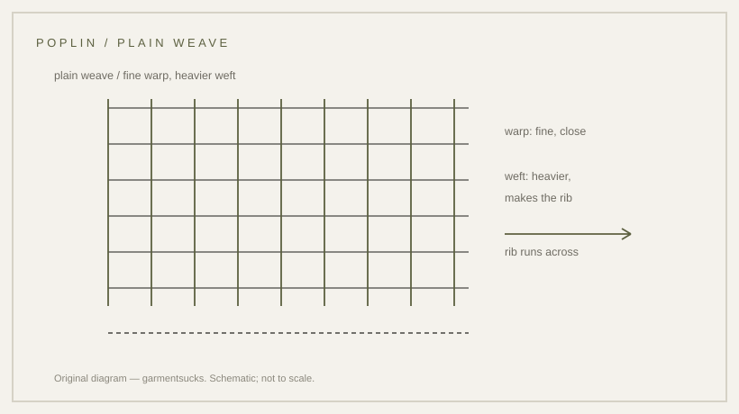

fabric · 1963
Poplin: plain weave, fine rib, and a drying argument
A plain weave with a fine crosswise rib — and a drying argument that is often overstated.
probable Published 2026-11-13 · last checked 2026-11-13

1. Summary
Poplin is a plain-weave cotton cloth with a fine warp and a heavier weft, which gives a faint crosswise rib and a crisp hand.
The tropical jacket is described in an institutional catalogue as made of thin cotton-poplin. Confidence: probable — the catalogue supports the cloth, but no opened primary specification or test settles the drying claims.
2. What this is
Poplin: a plain weave (one warp thread over one weft) with a fine rib running across the cloth. Fibre and weave are separate decisions: the fibre here is cotton, the structure is plain weave.
Plain weave: the simplest interlacing, which makes a light, stable cloth. Rib: the visible line produced by a thicker weft.
3. Origin, context and the 1963 date
The tropical combat uniform introduced in June 1963 is described in the Imperial War Museums catalogue as made of thin cotton-poplin, with ripstop later. The catalogue text is institutional but was readable only as an index excerpt on this pass.
An earlier Quartermaster history records five-ounce poplin being diverted to jungle uniforms in 1945. Neither source gives a full specification for the cloth used in 1963, so the 1963 date belongs to the uniform, not to a dated poplin specification.
4. How it works: weave versus drying
A tight plain weave sheds wind and resists abrasion, but it holds water. The useful variable in heat is not how much air passes through the cloth but how fast it dries and whether it clings when wet.
A 1945 jungle-uniform fabric study found no consistent skin-temperature or sweat-rate difference from air permeability alone; drying behaviour separated the good cloths. It is a T1-era study, not opened in full for this card.
5. Construction and testing
Plain weave with a fine warp and heavier weft; the face is smooth and the rib runs across the width.
At-home tests: hold the cloth against a light to see the even weave; wet a corner and time how long it takes to dry; squeeze it and watch whether it clings to the hand.
6. Variants
| Cloth | Structure | Difference |
|---|---|---|
| Poplin | plain weave, fine rib | crisp, light, dries faster than sateen |
| Sateen | satin weave, smooth face | denser, wind-resistant, slow to dry |
| Ripstop | plain weave with grid yarns | tear resistance without extra weight |
| Broadcloth | plain weave, heavier | dress shirts, not field cloth |
Competing accounts
The common retail claim is that poplin keeps the wearer cool because it breathes. The 1945 study suggests the decisive variable was drying, not permeability. A controlled test on the 1963 cloth would settle it; the evidence currently favours drying speed as the more defensible statement.
| Account | Source (tier) | What it claims | Evidence offered | Weak point |
|---|---|---|---|---|
| Retail/marketing account | T4 | Poplin is cool because air passes through it | product copy | no measurement; repeats itself |
| 1945 fabric study | T1-era | Air permeability made no consistent difference; drying behaviour did | comparative study of ten fabrics | not opened in full for this card; concerns 1945 cloths, not 1963 |
7. Telling real poplin from a substitute
Look for an even plain weave with a faint crosswise rib, a crisp rather than lustrous face, and a cloth that dries without clinging.
8. Common mistakes
Calling every smooth cotton poplin; assuming the weave alone guarantees breathability; treating a marketing claim about cooling as a test result.
9. How to read it in wear
Poplin reads as a crisp, dry cloth: it holds a fold, does not cling when damp, and looks lighter than sateen.
10. Modern designer trail
Poplin remains the shirting cloth of tailoring and the base of many field jackets. No direct-influence claim is made here.
11. Specification
Only recorded figures belong on the left; the right column is a reproduction suggestion.
| Recorded in sources | Reproduction suggestion |
|---|---|
| Thin cotton-poplin for the 1963 tropical uniform (IWM catalogue, excerpt) | Plain weave, cotton, 150–170 gsm |
| Five-ounce poplin diverted to jungle uniforms, 1945 (Quartermaster history) | Width 45–58 in, mercerised and shrunk |
| Full cloth specification: not found in an opened document | — |
12. Questions and exercises
1) Wet a corner of a poplin shirt and a sateen jacket: which dries first? 2) Does the cloth cling when damp? 3) Which claim on this card is a measurement, and which is marketing?

Glossary
- Poplin
- Plain weave with a fine crosswise rib.
- Plain weave
- Simplest interlacing: one over, one under.
- Mercerising
- Alkali treatment that strengthens cotton.
Sources
- [S1] [T1] IWM 30150059 — TCU catalogue text: thin cotton-poplin (index excerpt; page not fully rendered)
- [S2] [T1-era] Quartermaster Corps history — five-ounce poplin diverted to jungle uniforms, 1945 (archive scan; not opened in full)
- [S3] [T1-era] 1945 jungle-uniform fabric study (NLM scan; not opened in full)
- [Photo] Plain-weave cloth macro, public domain (file page not verified)
Claims & sources
| Claim | Source | Tier | URL | Status |
|---|---|---|---|---|
| Tropical uniform made of thin cotton-poplin | IWM catalogue text | T1 | link | partially verified (index excerpt) |
| Five-ounce poplin diverted to jungle uniforms in 1945 | Quartermaster Corps history | T1 | link | unverified (not opened in full) |
| Air permeability made no consistent difference; drying behaviour separated fabrics | 1945 fabric study | T1 | link | unverified (not opened in full) |
| 150–170 gsm, 45–58 in width | site reproduction suggestion | — | working specification |